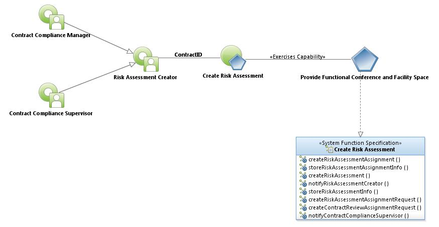
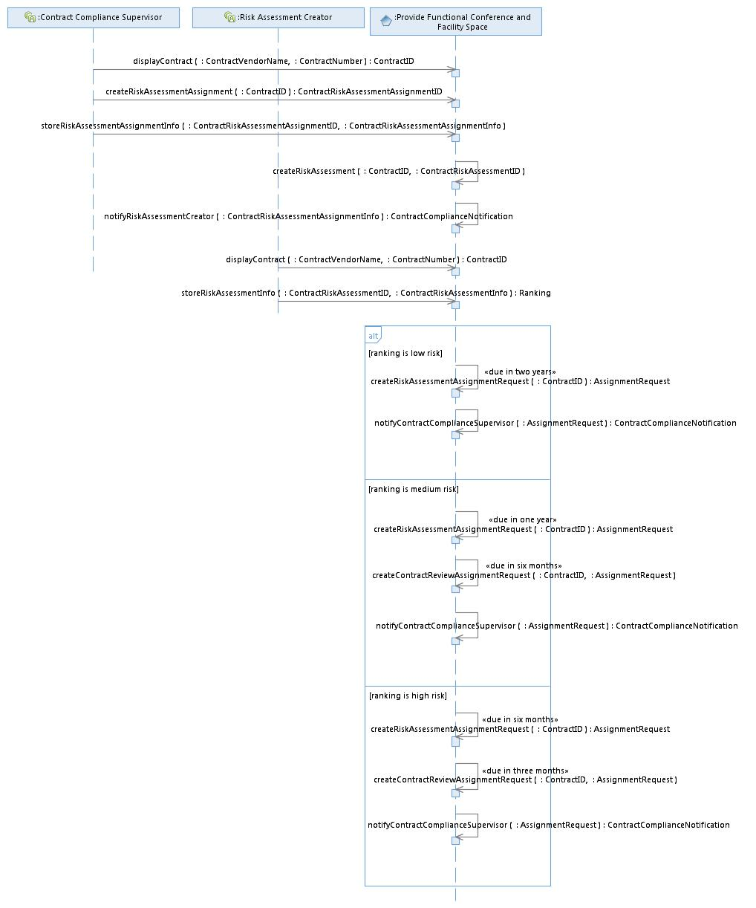

|
Create
Risk Assessment Use Case Specification
Last Modified: 6/30/2016
Select to
enlarge...

Create Risk
Assessment Use
Case Model
|
Scope: The Contract Compliance Supervisor uses the system to
display a Contract in need of a Risk AssessmentAssignment. The
RiskAssessmentAssignment could be needed because of discernment on the part of
the Contract Compliance Supervisor or because the system created an
AssignmentRequest, based upon the Ranking of a previous RiskAssessment. The
Contract Compliance Supervisor uses the system to display the Contract and
stores RiskAssessmentAssignmentInfo. The system automatically creates the Risk
Assessment, entering a default RiskAssessmentStatus of 'Assigned.' On a daily
basis, the system sends a notification to the Risk Assessment Creator,
instructing them to begin work on a Risk Assessment for a specific Contract.
The Risk Assessment Creator uses the system to display the Contract and locate
the assigned Risk Assessment and change the RiskAssessmentStatus to 'In
Progress.' The Risk Assessment Creator store RiskAssessmentInformation that
includes (but is not limited to) Categories, Numbers, Questions, MaxPoints,
Scores and Comments. The Risk Assessment Creator provides all Answers and
enters corresponding Scores, using their skills and knowledge. Comparing the
TotalScore to the MaxPoints allowed, the system provides a Ranking of Low Risk,
Medium Risk or High Risk. Based upon whether the Ranking is High or Medium, the
system automatically creates an AssignmentRequest for the Contract Compliance
Supervisor. Finally, the Risk Assessment Creator changes the
RiskAssessmentStatus to 'In Review'.
Select to
enlarge...

Create Risk
Assessment Sequence Diagram |
Table of
Interface Descriptions
| Type/Interface |
Description |
Provide Functional Conference and Facility Space/
displayContract
|
The user uses the Contract
Manager system to locate and
display a Contract by searching for the Contract Vendor Name or the
Contract
Number.
|
Provide Functional Conference and Facility Space/
createRiskAssessmentAssignment |
The Contract Compliance Supervisor uses the system to create a Risk Assessment Assignment.
|
Provide Functional Conference and Facility Space/
storeRiskAssessmentAssignmentInfo | The
Contract Compliance Supervisor uses the system to store the following
RiskAssessmentAssignmentInfo for a specific Contract: Next Risk
Assessment Date and Risk Assessment Creator, Assignment Type (the
system auto-fills with 'Risk Assessment').
|
Provide Functional Conference and Facility Space/
createRiskAssessment |
The system creates a new Contract Risk Assessment, entering
a ContractID and a Risk Assessment Status (defaulting to Assigned) and
receiving a new ContractRiskAssessmentID in return.
|
Provide Functional Conference and Facility Space/
notifyRiskAssessmentCreator
|
The system daily searches for Contract Risk Assessment Assignments
to begin within 60 days, 30 days, 5 days and notifies the appropriate
Risk Assessment Creator assigned to the task. Notification appears in
the form of a dashboard item displaying all Contract Risk Assessments
due for a Risk Assessment Creator along with their Next Risk Assessment
Date. Notification also includes Status (Assigned, In Progress, On
Hold, In Review). Dashboard does not include Risk Assessments with a
Status of Published. Dashboard displays Risk Assessments that have a
Status of 'In Review' in their own portal. Dashboard displays Risk
Assessments that are past due in their own portal.
|
Provide Functional
Conference and Facility Space/
storeRiskAssessmentInfo
|
The Risk Assessment
Creator stores the following ContractRiskAssessmentInfo:
RiskAssessmentStatus, DateStart, DateEnd. Each RiskAssessment also
contains multiple questions, contained within the
ContractRiskAssessmentInfo and each have individual values for:
Categories (eg. contract specific factors), Numbers, Questions,
MaxPoints (predetermined), Scores, Comments. The Risk Assessment
Creator provides all Scores using their skills and knowledge. Other
information included on a ContractRiskAssessment are TotalMaxPoints
(the total of all MaxPoints values), as well as a TotalScore (the total
of all Score values). Both totals are calculated by the system and not
modifiable. Based upon the TotalScore, a Ranking (Low Risk, Medium
Risk, High Risk) is automatically calculated by the system: 1-199 =
Low, 200-399 = Medium, >400 = High. RiskAssessmentStatus equals one
of the following values: Assigned, In Progress, On Hold, In Review,
Published. The RiskAssessmentStatus will default on creation to
'Assigned.' The Risk Assessment Creator changes the
RiskAssessmentStatus from 'Assigned' to 'In Progress' as they initially
store the data. Risk Assessments that experience extenuating
circumstance may be given a RiskAssessmentStatus of 'On Hold.' Risk
Assessments no longer 'In Progress' (ie. all questions answered) are
ready for review and are given a RiskAssessmentStatus of 'In Review' by
the Risk Assessment Creator and now appear in a systemwide dashboard
item entitled 'In Review', sorted in ascending order by
NextRiskAssessmentDateDue. Risk Assessments having a completed review
have their status changed to 'Published', a change made only by the
Contract Compliance Supervisor (or designee). The amount of time spent
making changes to a RiskAssessment are automatically stored by the
system in the AuditTimeLog. The system tracks the Timestamps of when
the Risk Assessment Creator begins and ends work on a Risk Assessment
as well as a count of responses edited.The AuditTimeLog stores the
EditStartTimestamp, EditEndTimestamp, EditDetail (a count of responses
edited). Additionally, any modifications made to the
RiskAssessmentStatus are stored in the AuditStatusLog. The
AuditStatusLog stores the following information: IsRiskAssessment,
StatusChangedTo, CreationTimestamp. Risk Assessments with a status of
Published may no longer be modified. Users of the system have the
capability of running a Risk Assessment Report to see when each Risk
Assessment was last modified and by whom. The Risk Assessment is
printable in its entirety by clicking a 'Print Risk Assessment' button.
|
Provide Functional
Conference and Facility Space/
createRiskAssessmentAssignmentRequest
|
If a Risk Assessment Ranking value is 'Low Risk' the system creates
an AssignmentRequest and enters the following information: ContractID,
AssignmentType (Risk Assessment), DateDue (due two years from the
DatePublished), RequestStatus (Pending). If a Risk Assessment Ranking
value is 'Medium Risk' the system creates an AssignmentRequest and
enters the following information: ContractID, AssignmentType (Risk
Assessment), DateDue (due one year from the DatePublished),
RequestStatus (Pending). If a Risk Assessment Ranking value is 'High
Risk' the system creates an AssignmentRequest and enters the following
information: ContractID, AssignmentType (Risk Assessment), DateDue (due
six months from the DatePublished), RequestStatus (Pending).
|
Provide Functional
Conference and Facility Space/
createContractReviewAssignmentRequest
|
If a Risk Assessment
Ranking value is 'Medium Risk' the system creates an AssignmentRequest
and enters the following information: ContractID, AssignmentType
(ContractReview), DateDue (due six months from the DatePublished),
RequestStatus (Pending). If a Risk Assessment Ranking value is 'High
Risk' the system creates an AssignmentRequest and enters the following
information: ContractID, AssignmentType (ContractReview), DateDue (due
three months from the DatePublished), RequestStatus (Pending).
|
Provide Functional
Conference and Facility Space/
notifyContractComplianceSupervisor
|
The system provides a
notification to the Contract Compliance Supervisor in the form of a
dashboard item displaying all AssignmentRequests with a RequestStatus
value of 'Pending', sorted in ascending order by the DateDue.
|
|
{kind=link}
{kind=link}
{kind=link}
{kind=link}